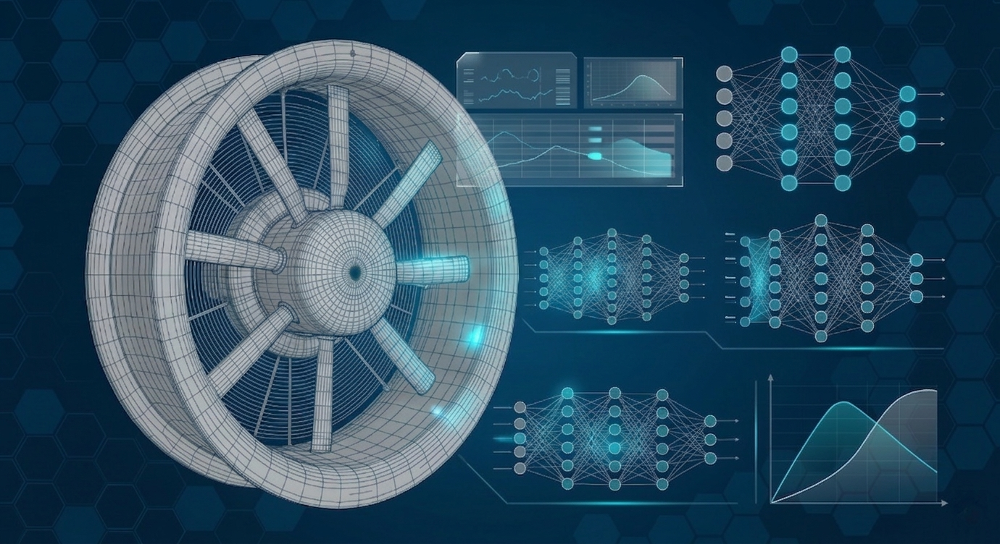

Project Showcase
// 技術實踐紀錄：從數值模擬到智慧應用

Data Science / AI
流體機械性能 AI 預測系統
運用深度學習模型 (如 1D-CNN, ResNet)，將耗時的數值模擬（CFD）過程轉化為秒級預測引擎。針對特定動力幾何參數，精確預測其流體特性曲線，大幅縮短 R&D 開發週期與成本。
Python
TensorFlow
Tkinter (GUI)
CFD Data

Embedded System / AI
嵌入式影像辨識與整合技術
完成從 AI 模型訓練到邊緣運算硬體 (如微控制器) 的部署流程。優化輕量化模型 (TensorFlow Lite)，實現即時影像識別與機械作動整合，適用於智慧檢測與流體機械狀態監測場景。
TFLite
C++
MCU Integration
CV

Software Integration / IoT
工業智慧監控與分析整合平台
客製化開發跨平台軟體與 GUI 介面，垂直整合 AI 性能預測模型、前端硬體傳感器數據 (IoT) 與數據庫系統。提供使用者直觀的設備監控、數據分析與性能預測視覺化看板。
Full-Stack
UI/UX
Database
IoT Protocols